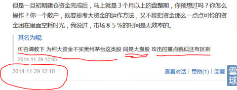
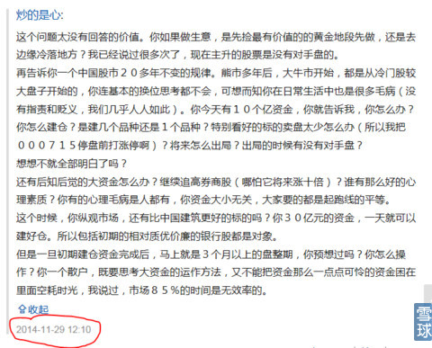

刚才看到有粉丝翻出我之前给人的回复。细读之后，连我自己都不敢相信，那些话是我在那段时光里，一秒钟都不用思考直接从指尖敲出的思维。难怪老粉丝都认同：心大90%的精华恰恰是在给粉丝不经意的顺手回复中。
下图是2014年11月28日写出《就买中国建筑吧》帖子后，给不解其意的过路人看客的回复。
扪心自问，今天，即使我自己也写出不那个时刻的那些活跃的思想。就像前两天与人辩论“中国南车”，如果不是趁着那股劲儿一鼓作气把思维有条理的写出来，事后就再也不会有激情去完成。
下图是当时问答的截图。


上图中错别字“你资金大小无论”，应该是“与资金大小无关”。
 |
就算是我自己，事后也没有那时刻的才气炒的是心 2015-02-04 10:14:54 |
Copyright © 1996-2014 SINA Corporation All Rights Reserved.